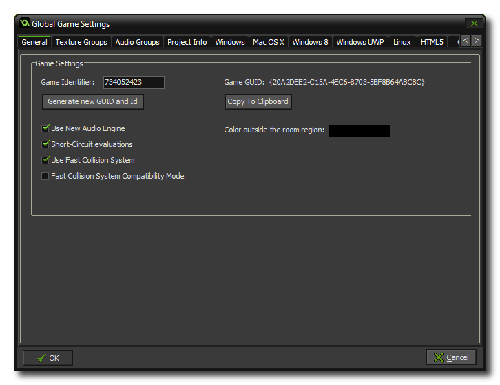

The General Options Tab
This section deals with the general options of the Global Games Settings Window.

This tab deals with a few of the general aspects of how GameMaker: Studio 1.4 will run your game.
To start with you are shown the Game Identifier value - which can be edited if required - along with the Game GUID which is the unique identifier that is used to identify the game project. Underneath these fields you have a button that can be used to generate a new Game Identifier (which can be accessed in your game by using the constant game_id) and . The button to generate this id also re-creates the Game GUID hash which can then be copied to the clipboard with the help of the button below for use in your applications and games.
Underneath the Game ID data, you can choose the colour outside the room region (which is the colour used to draw the background when the view goes outside of the room region). The default value is black. Beside this you also have the following options:
- Use New Audio Engine: Checking this will enable the "new" audio system (which uses the audio_* functions) while unchecking it will enable the legacy audio engine (that uses the sound_ and music_ functions). Due to incompatibilities you cannot have both the new audio engine and the legacy sound engine active at the same time. For old games created with other versions of GameMaker or for those games started before the new audio engine was added, the Legacy Audio will be used as default, while for all new games GameMaker: Studio will default to the new audio system. However, you can change this at any time by flagging (or un-flagging) this option. For more information on the new Audio Engine, please see the section on Game Assets - Sound.
- Short-Circuit Evaluation: The default behavior for GameMaker: Studio is to have short-circuit evaluation on, meaning that when performing any boolean check with multiple expressions, if any of them fail then the rest will be "skipped", giving a very minor boost to your game logic. However, older versions of GameMaker: Studio evaluated both arguments to a boolean operation, even when the first argument already determined the outcome, so disabling this option will return GameMaker: Studio to using the previous method. Generally you would want this on, but in certain cases (particularly if you are importing old projects) you may need to switch this off to prevent any undesired effects.
- Use fast Collision System: This is checked by default and tells GameMaker: Studio to use the "fast" collision system over the legacy one. The fast system is a tree based spatially collision system that can make massive speed ups in collision testing. However it may not be entirely compatible with old or imported projects and so you can disable it here (although you might want to try Compatibility Mode first, see below). It is on by default for new projects.
- Fast Collision System Compatibility Mode: When this is enabled, GameMaker: Studio will still use the fast collision system, but it will be modified to work more like the legacy collision system. If you are having issues with collisions in your project (especially if the project is an older one) then you may benefit from enabling this (note that this will affect the performance of the fast collision system, but not
as adversely as switching off fast collisions all together).
© Copyright YoYo Games Ltd. 2018 All Rights Reserved